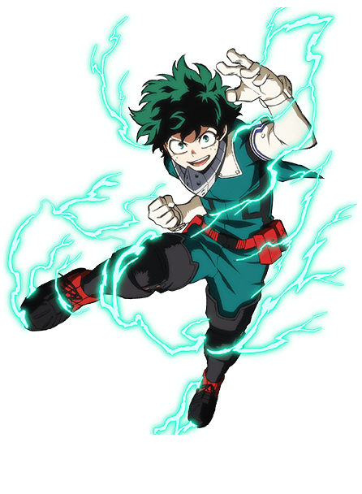
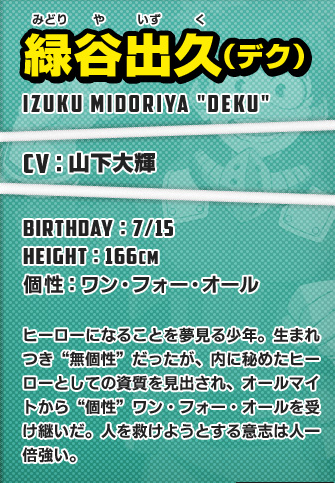
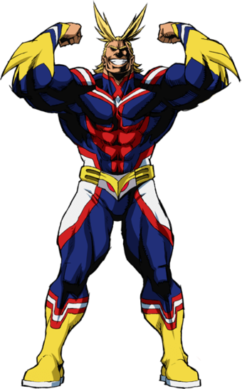
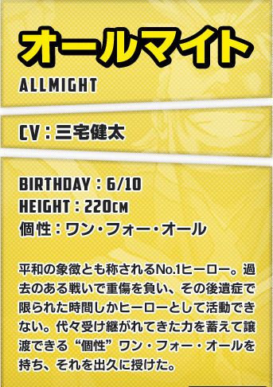
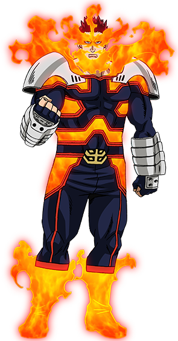
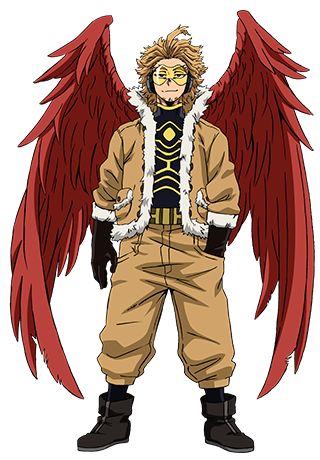

Minibiografia:
Embora tenha nascido sem individualidade, Midorya Izuku conseguiu chamar a atenção do lendário
herói All Might devido ao seu heroísmo inato e, desde então, tornou-se seu aprendiz mais
próximo, bem como um aluno da Classe 1-A do Colégio U.A.. All Might passou sua Individualidade
para Izuku, fazendo dele o nono portador do One For All.


Minibiografia:
Toshinori foi o oitavo usuário da individualidade One For All e recebeu esta de Nana Shimura. Ele já passou a tocha para Izuku Midoriya, a quem ele está preparando para ser seu sucessor. Após sua luta contra o Hisashi Midoriya ele perde todo o resto de poder que ainda tinha. All Might se aposentou da luta contra o crime e, encerrou sua era como o maior herói do mundo.

